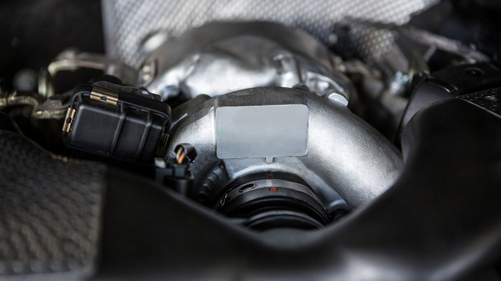

Elektronika auta · 4 min czytania
Używany sterownik silnika – na co uważać przy zakupie
Używany sterownik silnika kusi ceną, ale rzadko działa od razu po wpięciu. Podpowiadamy, co sprawdzić przed zakupem, jakie numery porównać i dlaczego sterownik trzeba dopasować do Twojego auta.

Nowy sterownik silnika potrafi kosztować tyle, że wiele osób od razu szuka ogłoszeń z częściami z drugiej ręki. To zrozumiałe, a używany sterownik silnika bywa rozsądnym rozwiązaniem. Tyle że to nie żarówka, którą wystarczy wkręcić. Jeśli kupisz niewłaściwy egzemplarz albo nie zaplanujesz jego dopasowania, zostaniesz z częścią, która nie działa, i autem, które dalej nie odpala.
Najpierw diagnoza, potem zakup
Zanim zaczniesz przeglądać ogłoszenia, upewnij się, że to naprawdę sterownik jest uszkodzony. Objawy „padniętego sterownika” bardzo często daje coś innego: przepalony bezpiecznik, przekaźnik, skorodowana masa, uszkodzona wiązka, czujnik albo kluczyk. Typowe sygnały opisujemy w artykule awaria sterownika silnika – objawy.
Zapytaj też, czy Twój sterownik da się naprawić. To często najwygodniejsza droga, bo oryginał już współpracuje z Twoim autem, immobilizerem i kluczykami.
Używany sterownik silnika – kiedy ma sens
- gdy Twój sterownik jest uszkodzony tak, że naprawa się nie opłaca albo nie jest możliwa – np. po poważnym zalaniu lub spaleniu (o zalanej elektronice piszemy w tekście zalany sterownik),
- gdy nowy sterownik jest trudno dostępny albo jego cena jest nieproporcjonalna do wartości auta,
- gdy masz pewność, że używany egzemplarz pasuje do Twojego auta i da się go do niego dopasować.
Naprawa, używany czy nowy – porównanie
| Rozwiązanie | Zalety | Na co uważać |
|---|---|---|
| Naprawa Twojego sterownika | zna już Twoje auto i kluczyki, nie trzeba szukać pasującej części | nie każde uszkodzenie da się naprawić, np. przy mocnej korozji |
| Używany sterownik | zwykle niższa cena niż nowy | numery muszą pasować, potrzebna adaptacja, nieznana historia części |
| Nowy sterownik | znane pochodzenie i stan | cena, czas oczekiwania, kodowanie do auta |
Wybór zależy od rodzaju usterki, wartości auta i tego, jak szybko potrzebujesz samochodu. Dobry fachowiec przedstawi Ci te opcje z ceną, zanim cokolwiek zamówisz.
Numery, które muszą się zgadzać
Dwa sterowniki z tego samego modelu auta mogą wyglądać identycznie, a mimo to nie być zamienne. Przed zakupem porównaj:
- numer części nadany przez producenta samochodu,
- numery sprzętu i oprogramowania nadane przez producenta sterownika (z naklejki na obudowie),
- wersję silnika – pojemność, moc, kod silnika,
- rodzaj skrzyni biegów – manualna czy automatyczna,
- rocznik i wersję auta – zmiany po liftingu albo inne wyposażenie potrafią mieć znaczenie.
Zrób zdjęcie naklejki swojego sterownika (o ile łatwo do niego dotrzeć) i poproś sprzedawcę o wyraźne zdjęcie naklejki oferowanego egzemplarza. Najlepiej pokaż oba fachowcowi, zanim zapłacisz. Jeśli sprzedawca pisze, że sterownik pasuje „do kilku wersji”, poproś o konkretne numery i porównaj je sam.
Immobilizer i kluczyki – dlaczego samo wpięcie nie wystarczy
Używany sterownik pamięta dane z auta, z którego pochodzi – także te związane z immobilizerem. Po wpięciu do Twojego samochodu zwykle nie rozpozna Twoich kluczyków, a efekt jest znajomy: rozrusznik kręci, ale silnik nie zapala. Więcej o tym objawie przeczytasz w tekście auto kręci, ale nie odpala.
Dlatego sterownik trzeba dopasować do Twojego auta – tak, by współpracował z immobilizerem i kluczykami. To zadanie dla specjalisty, wykonywane po sprawdzeniu, że samochód należy do Ciebie. Przygotuj wszystkie kluczyki, które mają działać z autem – także zapasowy – żeby nie trzeba było wracać do tematu później.
Ostrożnie z ogłoszeniami typu „sterownik bez immo” albo „pasuje do wszystkiego”. Sterownik z wyłączonym immobilizerem to auto pozbawione jednego z podstawowych zabezpieczeń przed kradzieżą. Unikaj też sprzedawców, którzy nie potrafią powiedzieć, z jakiego auta pochodzi część.
Jak kupić bezpieczniej – lista kontrolna
- Kupuj od firmy, która jasno opisuje warunki zwrotu. Kupując jako konsument przez internet, masz zwykle 14 dni na odstąpienie od umowy bez podania przyczyny. Pamiętaj jednak, że za zmniejszenie wartości części przez korzystanie z niej ponad zwykłe sprawdzenie – np. montaż i adaptację – możesz odpowiadać. Przy zakupie od osoby prywatnej prawo odstąpienia nie przysługuje, więc ustal warunki zwrotu przed zapłatą.
- Poproś o dane auta dawcy – model, silnik, rocznik, najlepiej numer VIN. Rzetelny sprzedawca nie powinien mieć z tym problemu, a Ty zmniejszasz ryzyko, że kupisz część z kradzionego auta.
- Obejrzyj zdjęcia obudowy i złącza. Korozja, zielony nalot, ślady wody, wygięte piny albo ślady otwierania obudowy to sygnały ostrzegawcze.
- Zapytaj, czy sterownik był naprawiany albo programowany.
- Zachowaj dowód zakupu i całą korespondencję ze sprzedawcą.
- Nie płać „na słowo”, zanim nie porównasz numerów.
Zadzwoń, zanim kupisz. Zdjęcie naklejki Twojego sterownika i oferowanego egzemplarza pozwala wstępnie ocenić, czy zakup ma sens – to tańsze niż odsyłanie niepasującej części.
Po zakupie: montaż i dopasowanie
- Nie próbuj odpalać „na próbę”. Z niedopasowanym sterownikiem auto i tak nie zapali, a Ty niepotrzebnie rozładujesz akumulator. Wtyczki sterownika rozłącza się i podłącza przy wyłączonym zapłonie i odłączonym akumulatorze.
- Zleć dopasowanie sterownika do immobilizera i kluczyków Twojego auta.
- Po montażu trzeba skasować błędy, sprawdzić parametry pracy silnika i wykonać jazdę próbną.
- Zachowaj stary sterownik. Bywa potrzebny przy dopasowaniu, a czasem da się go jeszcze naprawić.
Zajmujemy się naprawą, adaptacją i programowaniem sterowników – także tych kupionych jako używane. Dojeżdżamy do klientów w Kielcach i okolicznych miejscowościach całą dobę, 7 dni w tygodniu. Przed pracą sprawdzamy dowód osobisty i dowód rejestracyjny, a cenę podajemy przez telefon, zanim zaczniemy. Zadzwoń: 668 292 270.